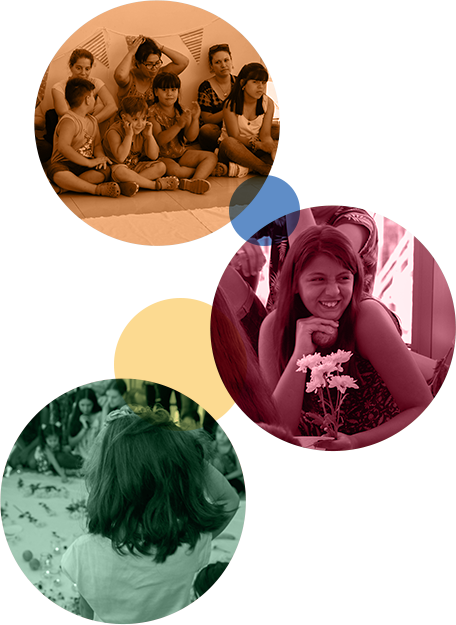

#UnaCasaParaAiken
Los niños en duelo
necesitan contención,
sostén y calidez.
¡Vos también
podés ayudarlos!
Doná ahora
#UnaCasaParaAiken
Desde hace 8 años, en Fundación Aiken brindamos acompañamiento psicológico a niños y adolescentes en duelo por la muerte de mamá, papá o hermanos.
Nuestro equipo de psicólogos recibe a las familias en sus consultorios y los grupos funcionan en espacios prestados por otra fundación. Las reuniones de equipo tienen lugar en la casa de la fundadora.
Nuestro mayor sueño es tener un espacio donde podamos recibir a los chicos para brindarles la contención que necesitan. Este sueño comenzó a hacerse realidad, ya que nos donaron una casa que será nuestra primera sede.
Para convertirla en un hogar armonioso, cálido y seguro, necesitamos realizar reformas importantes que requieren una gran inversión. Y para lograrlo, ¡necesitamos ayuda!
Con tu donación, colaborás para que la casa de Aiken se transforme en un espacio donde los chicos en duelo y sus familias puedan volver a sonreír.
Doná ahora
con tarjeta de crédito a través de nuestro formulario seguro.
Si querés hacer tu donación en efectivo o por transferencia bancaria, escribinos a donaciones@fundacionaiken.org.ar
